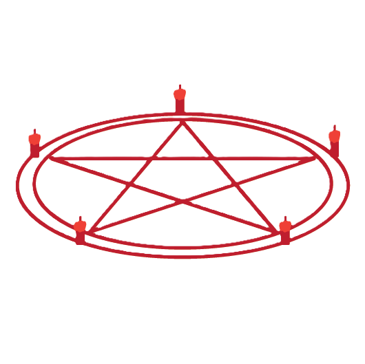

Popis
Jako prokletý předmět má vyvolávací kruh šanci 1 ku 7, že bude vybrán jako předmět, který se na mapě objeví na přednastavených obtížnostech, a to na jednom konkrétním místě na mapě.
Použití
Vyvolávací kruh lze použít zapálením všech pěti červených svíček – zamířením na ně a stisknutím klávesy pro sekundární použití s rozžhaveným zapalovačem nebo zapáleným světlem. Každá zapálená svíčka odebere 16 % příčetnosti všem hráčům v okolí. Na rozdíl od jiných zdrojů ohně nemůže duch tyto svíčky zapálit.
Svíčky ve vyvolávacím kruhu může duch sfouknout stejně jako běžné světla, ale samy od sebe nezhasnou, kromě situace, kdy jsou zapáleny při příčetnosti hráče nižší než 16 %.[pozn. 1] Opětovné zapálení zhasnuté svíčky opět odebere 16 % příčetnosti všem hráčům v okolí.
Jakmile jsou všechny svíčky zapáleny, duch je vyvolán a plně zhmotněn, kromě ducha typu Shade, který se může objevit jako průhledný stín. Vyvolaný duch zůstane nehybný po dobu 5 sekund a nemůže hráče zabít. Toto období je považováno za událost ducha. Přední dveře se však ihned po zapálení poslední svíčky zamknou. Po této události se světla v místnosti s kruhem zhasnou a duch okamžitě zahájí prokletý lov na místě, bez další jednosekundové prodlevy. Jakmile je kruh aktivován, nelze jej znovu použít.
Pokud je svíčka zapálena při příčetnosti nižší než 16 %, mohou nastat dvě možnosti:
Pokud je poslední svíčka zapálena během probíhajícího lovu, duch bude místo toho teleportován do středu kruhu a může okamžitě zabít hráče; tím se časovač aktuálního lovu nerestartuje, ale všechny budoucí lovy budou prodlouženy jako obvykle.